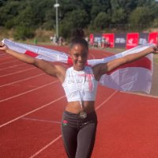
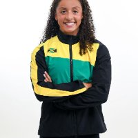
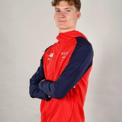
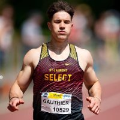
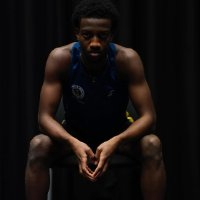
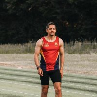

What athletes across
different sports have achieved

"I've hit three PBs this indoor season. I'm no longer scared of getting injured. Now I step onto the track with confidence."

"I finished 2nd in the 100m final with a PB and broke 24 seconds in the 200m for the first time. There was not a single negative thought in my head that day."

"I set a goal of 9.2s — and ended up running 9.1s. That was a huge win. I now rate my confidence 9 out of 10 in achieving my dreams."

"I've been hitting some of the fastest times I've ever done in training. Visualisation and journaling are now part of my daily routine."

"When I started, my confidence was 4 out of 10. Now I'm at 9. I feel mentally stronger than ever — and back in control for the first time in a long time."

"I learned how to properly immerse myself in visualisation and apply it consistently in competition. Training your mind is essential if you want to get the most out of yourself."

"Right now I'd rate my confidence at a 10 out of 10. I have the tools. I see no reason why I can't achieve my goals."

"Journaling every morning and breathing techniques truly changed my life — reducing my anxiety not only in sport, but in everyday life as well."

"I no longer feel controlled by chance emotionally. I now know when to relax and when to push. Training has become far more enjoyable because I feel in control."

"I came in with a PB of 48.3 seconds and improved to 47.5. Making a British indoor final wasn't even in my sights before starting this coaching."

"I'm more focused and calm, especially during races. By being mentally centred, my performance naturally got better. I'd rate my confidence at a solid 8 out of 10."

"I was rated 3/10 before the programme. Now I can confidently say I'm at 9/10 consistently on a daily basis. My mental clarity has skyrocketed."

"I'm now able to switch on and off that zone of focus when I need it. These strategies aren't just for sport — they're something I use in everyday life too."

"I went into the race completely relaxed, used the visualisations we'd practised, and came away with two PBs in the 100m and 200m."

"I finally broke 22 seconds in the 200m — a goal I've had since 2022. I've become a more confident, more focused, more consistent athlete."

"My injury hasn't healed yet, but I now feel in a much stronger place to tackle my recovery and return to running when my body is ready."

"My thought process is completely different when I make mistakes now. I look for things I did right first — and it makes the whole experience far more positive."

"I PB'd by over a second in the 400m and qualified for the semi-finals at nationals — something I honestly didn't believe I could do."